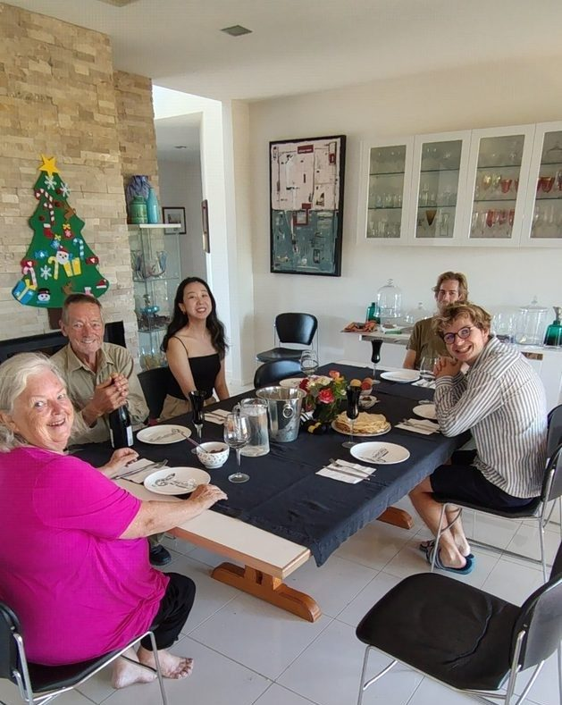
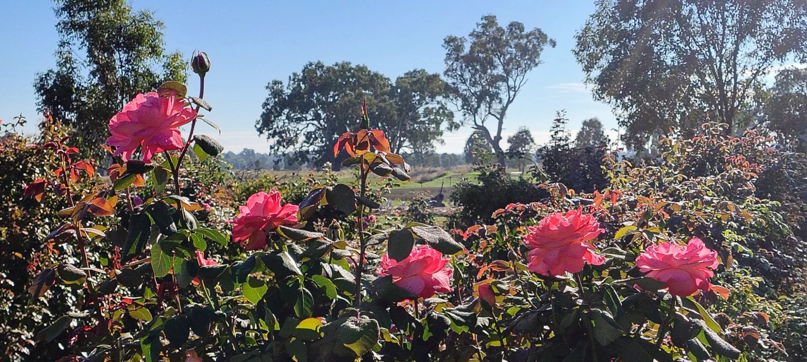
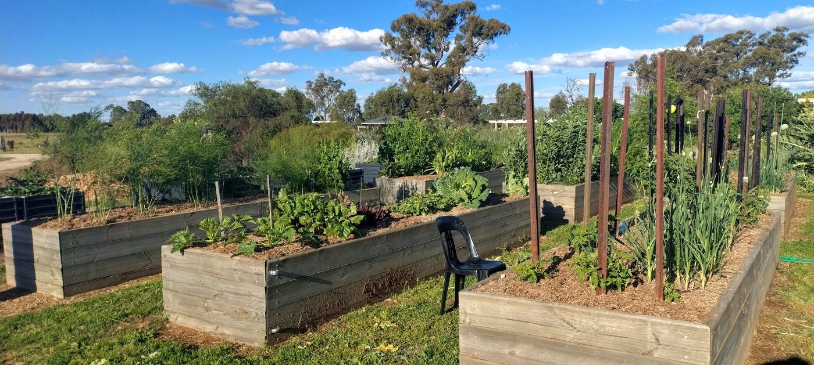
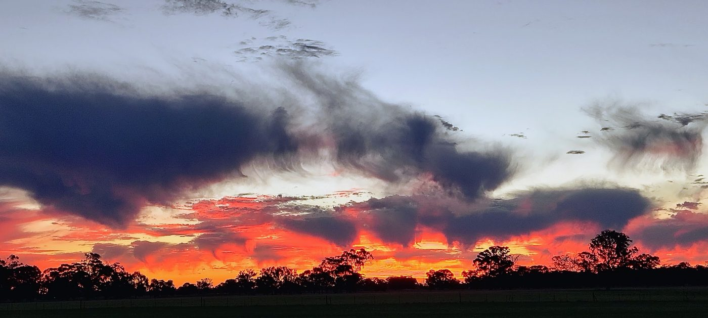

Gooramadda · Northern Victoria · Murray River Country
Roses, orchard, open skies, and good work done together
Come and helpOur story

Seven years ago we moved to our little farm at Gooramadda and we haven't stopped since. We've been growing a garden, planting trees, learning to care for the land, and building something we're genuinely proud of.
Tim is a retired engineer with a gift for designing and building. Beth teaches creative arts and public health at an Australian university. Our head gardener Mick leads all outdoor work and training.
We joined Landcare to better understand the local trees and wildlife. The bird life here is extraordinary - flame robins, splendid fairy-wrens, grass parrots, eagles, and a family of quail who live in the herb garden.
Close to the wine region, the Murray River, Rutherglen, and Corowa — and under some of the most spectacular skies you'll find anywhere.
The property
From the rose garden and orchard to the Italian garden and the wood-fired pizza oven - there's always something in bloom, something to harvest, and something to build.



What's here
A small working property with more than 70 named areas, each with its own character and purpose.
450 fragrant rose bushes in a maze of circular paths, with a central pergola and two entrance paths. One of Beth's great passions.
Apple, pear, peach, lemon, lime, fig, pomegranate, finger lime, and a range of nut trees and berries. Free-range chickens roam throughout.
Raised beds producing seasonal vegetables and herbs year-round, following the North East planting calendar. A glasshouse for propagation.
A formal garden space with its own distinct character, requiring regular care and attention through the seasons.
Shed 1 (engineering and woodwork), Shed 2 (machinery and tools), Beth's Shed (music and sewing), and the Arts Studio with its sunset deck.
Northern and southern conservation lanes, a north-eastern plantation, dam, swamp, and native plantings throughout the property.
Find us
884 Gooramadda Road, Gooramadda — 500 metres east from the UpRiver Road intersection. Look for the magpie on the letterbox.
10 minutes from Rutherglen · 35 minutes from Albury-Wodonga · Close to Corowa, Beechworth, and the Murray River
HelpX volunteers
We welcome HelpX volunteers for stays of one week to several months. In exchange for four hours of genuine work per day, five days a week, you'll have a comfortable room, shared meals, and a place that most people leave reluctantly.
Garden and orchard maintenance, planting and harvesting, house upkeep, meal preparation. Training on farm machinery including ride-on mowers, a stand-on loader, and a tractor.
A private bedroom, shared bathroom, all meals at the table together, pool access, a music room full of instruments, bicycles, WiFi, and the company of people who'll genuinely welcome you.
Self-motivated, tidy, happy to pitch in without being asked, open to learning, a good listener. This is a home, not a hostel. The helpers who thrive here embrace that fully.
In summer we start around 7am to beat the Northern Victorian heat. The farm at dawn — roses at their most fragrant, birds at their most active, the horizon turning gold — is worth waking up for.
What helpers say
"It felt like we'd gained a new family in Australia. It's definitely a place we want to return to."
"This is a beautiful place. You immediately become part of the family."
"The work isn't difficult — it's more like fun. The organisation remains very flexible."
"Every new skill gave me a sense of accomplishment — including learning to drive a tractor."
Get in touch
Tell us a little about yourself and what draws you to this kind of life. The more we know, the better we can work out whether we're a good match. We read every message and we'll be honest with you in return.